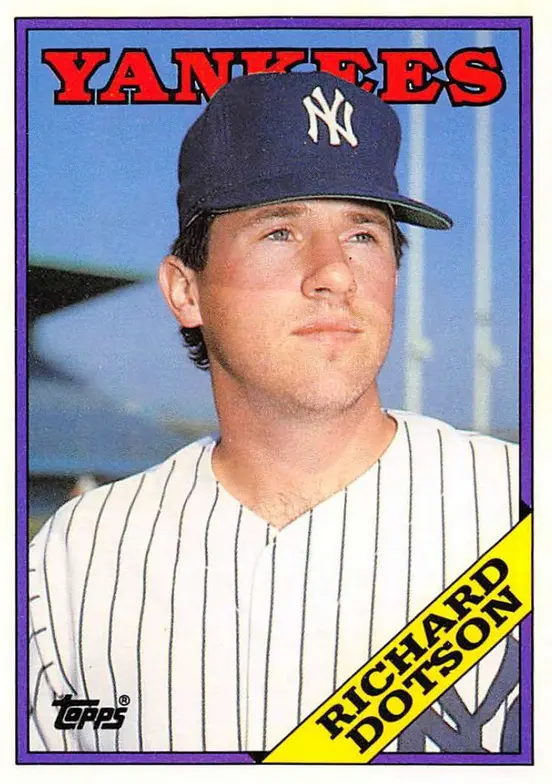

Richard Dotson
Career Highlights & Facts
(Facts are AI-generated and may require verification)
- Finished 4th in Cy Young Award voting during a 22-win campaign.
- Served as a primary rotation anchor for a division-winning squad.
- Selected as a 1st round draft pick with the 7th overall selection.
Would you like to find out more about Richard Dotson?
Read Player Biography
Richard Dotson
January 4, 2012
/
in
BioProject - Person
/
by
admin
This article is assigned to
Steven Powers Chylinski
Full Name
Richard Elliott Dotson
Born
January 10, 1959 at Cincinnati, OH (USA)
Stats
Baseball Reference
Retrosheet
Tags
None
Wikipedia Summary:
Richard Elliott Dotson is an American former right-handed pitcher in Major League Baseball in the 1980s. He is best noted for his 22-7 performance of 1983, helping the Chicago White Sox win the American League West Division championship that season. Dotson finished fourth in the American League Cy Young Award voting, behind teammate LaMarr Hoyt. Arm injuries came to limit what was a promising baseball career.
Career Totals
| WAR | W | L | ERA | G | GS | SV | IP | SO | WHIP |
|---|---|---|---|---|---|---|---|---|---|
| 16.0 | 111 | 113 | 4.23 | 305 | 295 | 0 | 1857.1 | 973 | 1.413 |
Statistics via Baseball-Reference.com
The Original Clue